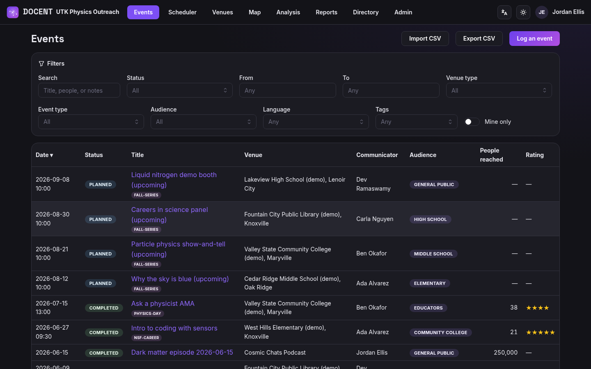
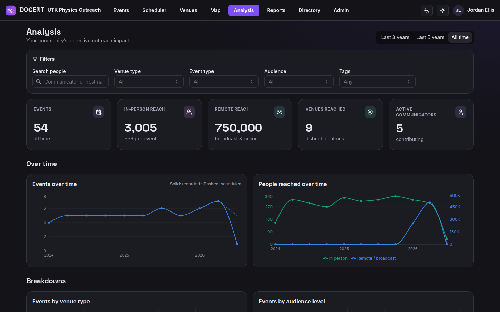
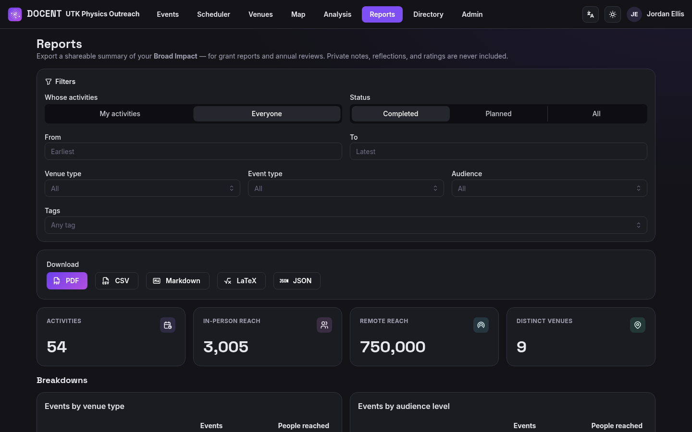

The school visits, the festival table, the observing night, the podcast. Logged in somebody’s spreadsheet, somebody else’s inbox, and three people’s memory. Then the Broad Impact section of the grant report is due on Friday.
Communicators log an event once — venue, date, host, audience, people reached — and the whole community works from one live list. Searchable, filterable, exportable, and importable from the spreadsheet you already keep.

Import every school, college, museum, and library in your region from OpenStreetMap. Each one sits on the map as an orange gap until someone reaches it — then it turns green. Click a gap to log an event right there.
Events and people reached over time, with in-person and broadcast reach counted separately. Breakdowns by venue type and audience level, top venues, and a community leaderboard — live, for everyone.

Pick a date range and a scope, then download a grant-ready summary of your community’s activity. Factual data only — never private notes, reflections, or ratings.

One command brings up the app, the database, and nightly rotated backups. Your records never leave your institution, which keeps data governance and FERPA simple — and it’s free and open source under the GPL.
testuser@utk.edu / 123456783dd2b671